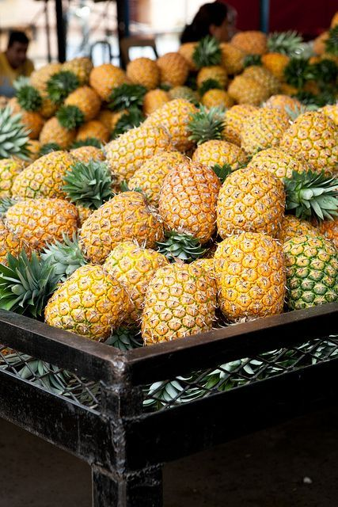
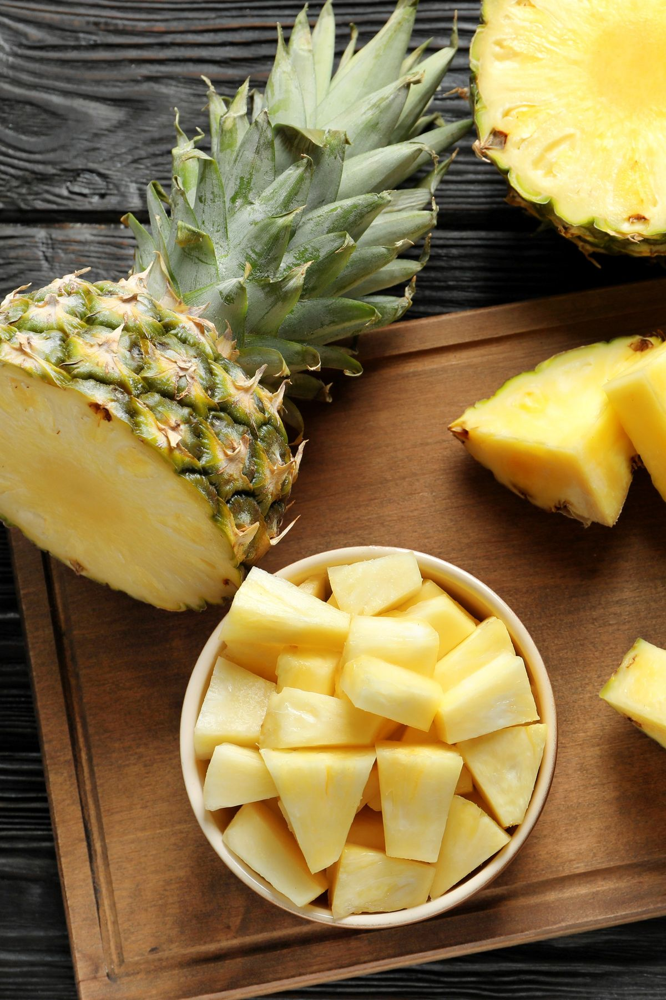

About Pineapple in Ghana
Pineapple (Ananas comosus) is one of Ghana's most important cash crops, renowned for its sweet taste and high export value. Introduced to Ghana centuries ago, pineapple farming has become a major source of income for thousands of smallholder farmers and large-scale producers alike. The crop thrives in Ghana's tropical climate, especially in the Eastern, Central, and Volta regions.
Economic Importance
Pineapple is a key contributor to Ghana's agricultural exports, second only to cocoa in terms of foreign exchange earnings from horticultural crops. The industry provides employment for over 15,000 people directly and many more indirectly through processing, packaging, and transportation. Ghanaian pineapples are highly sought after in European markets due to their unique sweetness and quality.
- Major export destinations: European Union (especially the UK, Germany, and France), Middle East, and regional West African markets.
- Supports rural livelihoods and community development.
- Encourages investment in infrastructure and agribusiness.
Pineapple Varieties Grown in Ghana
Ghana is known for cultivating several pineapple varieties, each with distinct characteristics:
- Smooth Cayenne: The most widely grown, known for its juiciness and suitability for canning and fresh consumption.
- MD2: A newer, export-oriented variety prized for its extra sweetness, golden color, and longer shelf life.
- Queen: Smaller, aromatic, and very sweet, often sold in local markets.
Production and Processing
Pineapple farming in Ghana ranges from small family plots to large commercial plantations. The crop is grown year-round, with peak harvests between March-June and September-December. After harvesting, pineapples are sorted, cleaned, and either exported fresh or processed into juice, dried fruit, and canned products.
Processing adds value and creates jobs in rural communities. Ghana has several modern pineapple processing factories, producing juice and other products for both local and international markets.
Challenges Facing Pineapple Farmers
- Fluctuating international prices and competition from other countries.
- Limited access to finance and modern farming inputs.
- Pest and disease outbreaks, such as mealybugs and heart rot.
- Post-harvest losses due to inadequate storage and transport facilities.
- Climate change impacts, including erratic rainfall and drought.
Interesting Facts About Pineapple in Ghana
- Ghana is among the top pineapple exporters in Africa.
- The MD2 variety revolutionized Ghana's pineapple industry in the 2000s.
- Pineapple is rich in vitamin C, manganese, and digestive enzymes (bromelain).
- Pineapple leaves are used to make fiber for textiles and crafts.
- Fresh pineapple is a popular ingredient in Ghanaian cuisine and drinks.